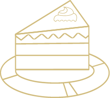
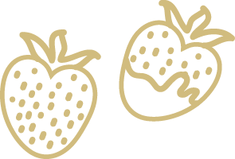
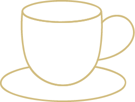
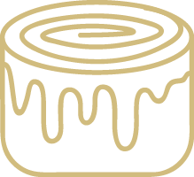
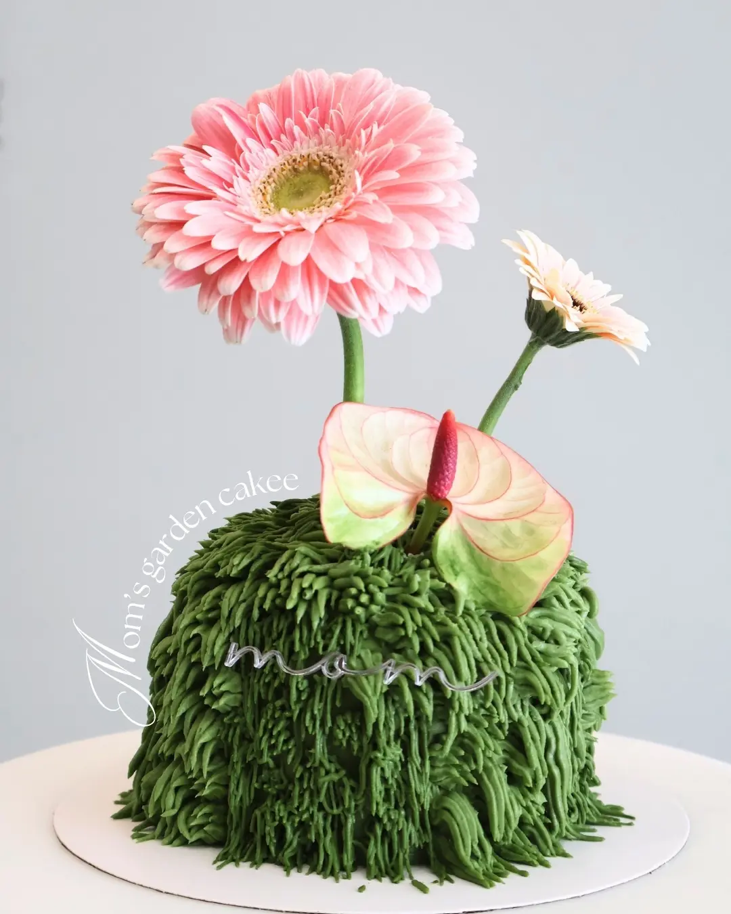

Hemos creado un espacio sobrio y lleno de movimiento, pensado para quienes disfrutan del arte de la pausa. Aquí cada visita es un pequeño viaje entre sabores delicados, texturas perfectas y una atmósfera que abraza.
Descubre nuestro menú